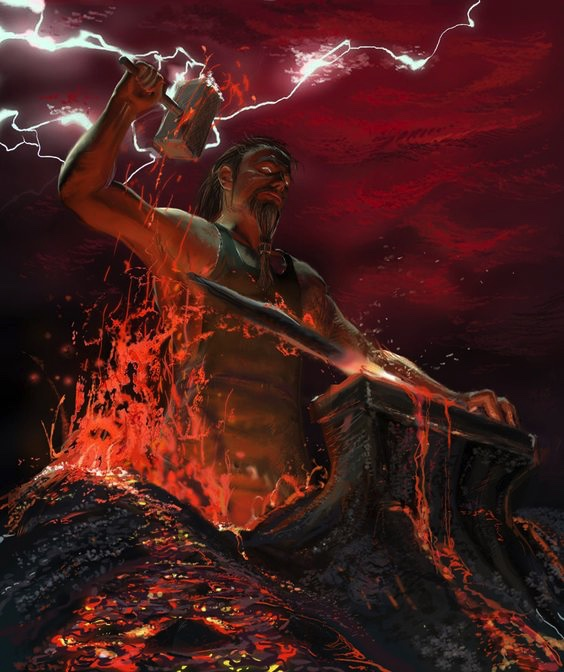
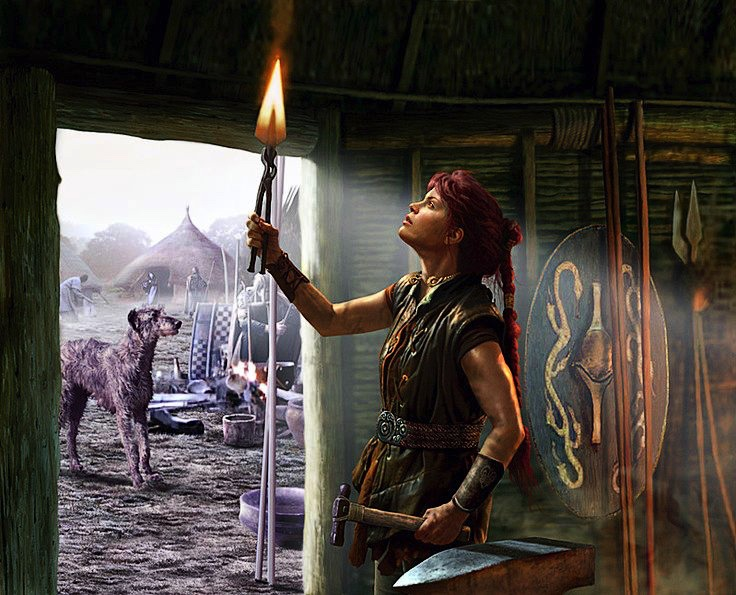

It’s gotten dark lately.
As an Astrologer. I often get requests about what could be going on with the planets, and I have noticed over time, that these requests come in clusters – often indicating a current trend that everybody is going through.
Now is such a time.
The current theme seems to be one of darkness, some despair, and many difficult, sometimes even traumatic endings. I have noticed that people seem to be dealing with big moves, monumental life decisions, and challenging relationship issues. I myself have been in a 40 degree climate with no ocean or rain in sight, facing down some huge demons myself and feeling the pressure of the times closing in on me.
Astrology can be a wonderful thing, especially when looked at for a deeper pattern, held up against the evidence of life experience. This darkness is not made up in our minds, and these feelings of despair have a source. Recently, we have experienced 3 big astrological events with Saturn going retrograde, the Total Solar Eclipse and the Lunar Eclipse in a row. We are in the shadow period of Mars going retrograde, and in a few days’ time (17 April to be precise), he stations retrograde at 8 degrees of Sagittarius. Then, on 28 April, Mercury turns Retrograde. Yep, things are pretty messy in the heavens lately and we are dealing with a huge amount of old stuff right now. Saturn and Mars, in traditional Astrology, are “malefic” planets – which means they do more harm than good, even when they’re in a jolly mood – and eclipses are often hailed as very dark events portending endings,death, catastrophes and so on.
The weather has gotten very stormy and we are pressed to forge ahead and learn to suffer in grace. We are challenged to find our lightest self.
For most of us, the issues that are coming up revolve around :
- Forced change – or change that we do not want yet have to learn to accept.
- Old insecurities we thought we’d dealt with.
- Anger management issues.
- Feeling “up and down” almost on a constant basis.
- Death – of friends, family members, loved animals.
- High pressure surrounding deadlines, time management.
- Having to take on greater responsibilities.
- Putting projects on hold and having to cultivate greater patience at the pace of everything in general.
- Relationship reviews – breakups & makeups – deciding what it is we want, although irrational arguments seem to be the theme of the moment.
- Deep seated fears & issues of shame & guilt.
First the eclipses forced us into change, ended some things and created extreme highs & lows over the month of March. Saturn then followed in the wake of this chaos, demanding that we look at the miasma that has been stirred up by the eclipses, asking us to face our fears, step up – take reality seriously and attend to our responsibilities. Mars has slipped into his shadow period in the meanwhile, as he works himself up to his retrograde, and we are beginning to argue, become aggressive & impatient. Our usual grace, our “niceness” has worn off, and what we have found beneath is not very pretty, and perhaps shocking, both in ourselves and in other people.
It is no wonder we have had enough.
However, it’s not the time to give up just yet. We are challenged to summon up our best selves, and find our own light in the darkness. We are asked to become our own ships, our own anchors in the storm. We are asked to treat ourselves, and others, with great gentleness and compassion. NOW is the time to learn self love – REAL self love. Accepting ourselves, and therefore others, in our totality of both light and dark. We cannot hope to be all good, as we are beings of nature and need to balance the polarities within.Under this current pressure, many of us will learn to bring forth the pure gold that lies inside us all, beneath the dross – and it is not going to be an easy job.
We are undergoing the fires of initiation.
As with all initiations, it can be all too easy to slip and fall, to falter – think of Frodo throwing the ring into the fires of Mordor – as pure hearted as he was, he too hesitated at the last, and if not for his friend, would have turned into the darkness he so hated yet was so drawn to. The lesson is to turn to your tribe for support, don’t be afraid to reach out and ask for help, because you’ll find more often than not, we are ll in the same boiling pot, and all desperate for a friendly word, a comforting hug, a message of encouragement. Love is the answer, through all the pain and all the darkness, and all the loneliness that social media has forced us into.
We are also challenged to become strong during this time,and keep going, even if the fires burn strong and all we want is to turn back, run away, quit the job, leave our relationships – and if these things are what the heart wants, we must follow that, but we must not run away at the first sign of trouble. Going through the forge is what will transform us into the people we wish to be. With both Saturn and Mars in the fiery, truthseeking sign of Sagittarius, we will learn what our truth is, even if we have to go through mountains of delusions to get there, and we simply must commit to a path and see it through. Saturn traversing this sign demands that commitment, and although Mars scatters our energy everywhere it can, when these planets work together, they are a formidable team of endurance, strength and determination. Later this year they will meet in an epic finale and we will see at last what has been forged from the fire – our own salvation.
So dear ones, do not lose heart now. Buckle on your breastplates of mercy, don on your helmet of peace and wear the sword of truth. Be a noble warrior, and a brave soldier in the heat of war.
